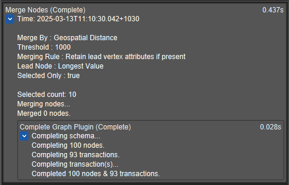

What's new in Constellation v3.1
Here is a list of changes we’ve added to this version of Constellation.
Search Function for Online and Offline Help
A search function has been added to both the online and offline help documentation to make finding help topics easier. Offline help is available within the Constellation application by going to Help -> Help Pages and Online help is available on the constellation-app.com website here.
Significant changes have been made to the way Animations are handled in Constellation. Animations are now able to be run concurrently on the same graph. Animations also now allow users to continue to interact with the graph while they are running.
Animations can be run from the Experimental -> Animations menu.
Improved Hierarchical Arrangement
The hierarchical arrangement has been updated to organise nodes in a stricter top-down arrangement. It will also no longer generate pendants that are placed in a non-hierarchical orientation as this would often create links that would extend over the base hierarchy causing unnecessary overlapping lines.
The arrangement has also been updated to allow one or more selected nodes to be used as the root nodes in the hierarchy. This has been made available alongside the existing functionality of choosing a Named Selection to identify the root nodes of the hierarchy, in which case any selected nodes will limit which nodes the arrangement will be performed on.
Word Cloud View Moved Out of Experimental
The newest view available for use in Constellation is the Word Cloud View. Available via the Views menu (or Ctrl-Shift-W if you like keyboard shortcuts), the Word Cloud View allows you to generate a word cloud based on a string attribute on your graph. This then enables you to analyse the phrases that appear on your graph and how often those phrases appear.
Word Clouds can be generated based on phrase length, phrase span, and a threshold for the minimum number of times a phrase is found. You can also filter the cloud based on a user-supplied text file of phrases you wish to filter on.
Layers View Added Selection and Allocation Functions
Each Layer has a new set of buttons: Select, De-Select, Allocate, and De-Allocate and a new checkbox option: Include Hidden
When you click on the Select/ button on a Layer, it will select all visible nodes that are currently allocated to the layer (and optionally also select matching nodes that are currently hidden, depending on whether the Include Hidden option is checked).
When you click on the De-Select button on a Layer, it will de-select all elements allocated to that Layer (and optionally also de-select matching nodes that are currently hidden, depending on whether the Include Hidden option is checked).
When you click the Allocate button, all currently visible selected nodes will be allocated to the layer, and if the Include Hidden option is checked, all hidden selected nodes will also be allocated to the layer.
When you click the De-Allocate button, all currently visible selected nodes will be de-allocated from the layer, and if the Include Hidden option is checked, all hidden selected nodes will also be de-allocated from the layer.
Plugin Reporter Contains More Information
Previously, the Plugin Reporter would contain a minimum amount of information about the plugins that have been run. The Plugin Reporter has now been updated to include the datetime that the plugin was run, the parameters the plugin used and information about how the graph was interacted with, e.g. how many nodes and transactions were affected.
Several Bug Fixes
Numerous bug fixes have also been made including:
- Welcome page graph images are no longer duplicated when a Save All occurs
- Extract Words from Text has been fixed to not ignore the whitelist when using other languages
- Fixed issue with numerical sort in the Histogram
- Added missing flag icons for some countries
Want to know more?
You can find out more information about the latest updates on the What's new page once you have installed version 3.0. There's loads of extra details available in the Release Notes and Change Log.
Would you like to learn more about how Constellation works?
There is a training package available on GitHub to learn how to make the most use of the various features in Constellation. There is also developer training for those seeking to deep dive into the underlying source code.
Contact Us
Do you have any feedback or suggestions for improvement? Noticed a bug? You can log an issue via the Help menu or clicking here.